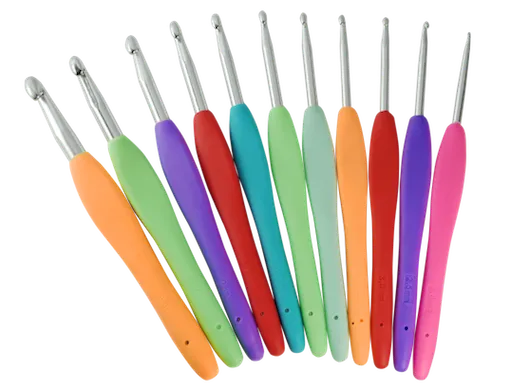
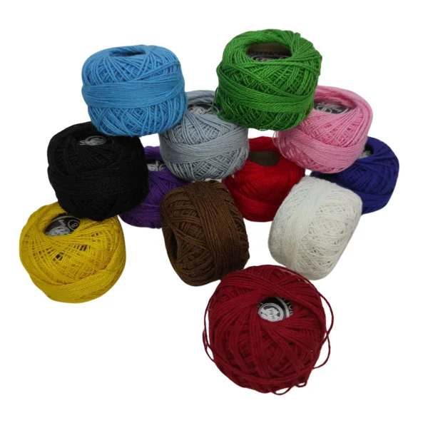
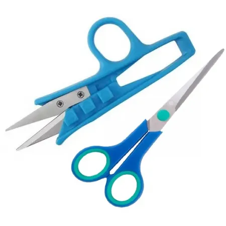
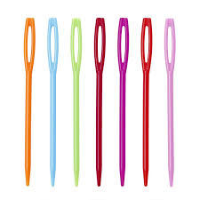

⊹₊˚‧︵‿₊𝓒𝓻𝓸𝓬𝓱𝓮̂ 𝓦𝓮𝓫₊‿︵‧˚₊⊹
𝐴𝑟𝑡𝑒, 𝑐𝑟𝑖𝑎𝑡𝑖𝑣𝑖𝑑𝑎𝑑𝑒 𝑒 𝑟𝑒𝑙𝑎𝑥𝑎𝑚𝑒𝑛𝑡𝑜
O crochê é uma técnica artesanal que utiliza agulha e fios para criar peças únicas, como roupas, acessórios e itens de decoração. Além de ser uma forma de expressão criativa, também ajuda a desenvolver concentração e coordenação motora.
Muitas pessoas utilizam o crochê como um hobby relaxante, capaz de aliviar o estresse do dia a dia. Com poucos materiais, é possível criar peças incríveis e até transformar essa prática em uma fonte de renda.

๋ ࣭ ⭑ 𝑀𝑎𝑡𝑒𝑟𝑖𝑎𝑖𝑠 𝑏á𝑠𝑖𝑐𝑜𝑠 ๋ ࣭ ⭑
-
𖹭: Agulha de crochê

Cada agulha tem um tamanho específico para cada espessura de fio
- 0,5mm a 2,0mm: Para fios mais finos (linhas delicadas);
- 2,5mm á 3,5mm: Para trabalhos leves (roupas finas):
- 4,0mm á 5,5mm: Tamanho médio (mais comum para iniciantes);
- 6,0mm á 8,0mm: Fios mais grossos (mantas, cachecóis...);
- 9,0mm ou mais: Para peças grandes e rápidas.
-
𖹭: Fios ou linhas

Os fios/linhas servem para criar as peças de crochê,cada uma delas para um tipo de projeto específico.
Tipos de fios/linhas(marcas mais vendidas):
- Círculo:Possui linhas de algodão e barbantes muito versáteis; ideais para roupas (Anne, Cléa), peças estruturadas como tapetes (Barroco, Duna) e também fios específicos para amigurumi, com boa definição de pontos e ampla cartela de cores.
- Coats Corrente: conhecida por linhas mais finas e resistentes; muito usada para roupas, moda e acabamentos delicados (Camila, Cisne), com toque macio e ótimo rendimento.
- Pingouin: oferece fios leves e acessíveis, ideais para vestuário e peças de verão (, Brisa), além de opções para amigurumi; boa variedade de cores e fácil de trabalhar.
- EuroRoma: especializada em barbantes ecológicos reciclados; indicada para tapetes, sousplats e peças de decoração, com fios firmes, resistentes e sustentáveis.
- Fial: focada em barbantes mais encorpados; ideal para tapetes, bolsas e peças que precisam de estrutura, com boa durabilidade e consistência.
- São João: produz barbantes resistentes com acabamento mais rústico; muito utilizada em peças utilitárias como tapetes e jogos de cozinha.
- Supremo: voltada para fios mais grossos e firmes; indicada para decoração pesada como tapetes e jogos de banheiro, com boa sustentação.
- Incomfio: trabalha com linhas mais finas e delicadas; indicada para roupas leves, detalhes e acabamentos, com boa definição de pontos.
- YarnArt: marca internacional com fios diferenciados (mesclados, texturizados); ideal para peças modernas e criativas.
- Red Heart: marca internacional conhecida por variedade de fibras (acrílico, algodão); indicada para diversos tipos de peças, principalmente vestuário e decoração.
𖹭: Tesouras
Tipos de tesouras de tapeçaria:
- Tesoura de arremate: pequena e leve, com ponta fina; ideal para cortar fios com precisão e fazer acabamentos sem desfiar a peça.
- Tesoura de precisão (bico fino): possui lâminas alongadas e ponta bem fina; ótima para cortes detalhados, principalmente em amigurumi e trabalhos delicados.
- Tesoura retrátil (ou de mola): abre automaticamente com pressão; prática para uso contínuo, reduz o esforço das mãos durante longos períodos de crochê.
- Tesoura comum de costura: maior e mais resistente; indicada para cortar fios mais grossos como barbantes, mas com menos precisão em detalhes.
𖹭: Agulha de tapeçaria
Tipos de agulhas de tapeçaria:
- Agulha de tapeçaria metálica: usada para costurar partes da peça e esconder fios com mais firmeza.
- Agulha de tapeçaria plástica: usada para costuras simples e fios mais grossos, com mais segurança no manuseio.
- Agulha de tapeçaria curva: usada para costurar peças tridimensionais, facilitando o acesso em áreas difíceis.
- Agulha de tapeçaria com ponta fina: usada para esconder fios e fazer acabamentos em trabalhos com linhas mais finas.

são utilizadas para cortar os fios durante e após o trabalho, ajudando no acabamento da peça e garantindo cortes precisos sem danificar o material.

são usadas para costurar partes do crochê e esconder os fios restantes, contribuindo para um acabamento mais limpo e bem feito.
๋ ࣭ ⭑ 𝑁í𝑣𝑒𝑙 𝑑𝑒 𝑑𝑖𝑓𝑖𝑐𝑢𝑙𝑑𝑎𝑑𝑒 ๋ ࣭ ⭑
O crochê possui diferentes níveis de dificuldade, que variam de acordo com a complexidade dos pontos utilizados e das peças produzidas. Essa classificação é importante para orientar iniciantes e praticantes mais experientes, ajudando cada pessoa a escolher projetos adequados ao seu nível de habilidade. Dessa forma, é possível desenvolver técnicas gradualmente, evitando frustrações e tornando o aprendizado mais eficiente e prazeroso.
| Nível | Tipo | Exemplo | Características | Tempo |
|---|---|---|---|---|
| Iniciante | pontos básicos / peças simples | correntinha, ponto baixo, cachecol | fácil de aprender, repetitivo | rápido (1–2 dias) |
| Intermediário | pontos com variações / peças médias | ponto alto, tapete, bolsa | exige mais atenção e prática | médio (3–5 dias) |
| Avançado | pontos complexos / peças detalhadas | amigurumi, blusas, rendasl | exige técnica, contagem e precisão | longo (1 semana ou mais) |
| Aviso: Alguns projetos podem exigir mais prática. | ||||
Ficou interessado(a) em aprender crochê na prática? Acesse: Aulas de crochê para iniciantes